Code
library(tidyverse)
library(tidycensus)
library(sf)
library(caret)
Sys.getenv("CENSUS_API_KEY") != "" # should print TRUE[1] TRUEThis is not a competition. There’s no leaderboard and no target RMSE. The goal is to practice the full prediction workflow on a question you choose, and to find out what actually helps. Some features you’re sure will help won’t, and some you add on a whim will. Both are findings.
You’ll:
Timing. Parts 1–4 use only what we’ve covered through Week 5. You can finish them before the October 9 lecture. Part 5 is new material; the lecture explains it, and the instructions below give you the essentials.
Type the code yourself. The worked examples show the pattern. Your job is to apply it to your outcome and your data choices.
Rules:
Every model is cross-validated on the same tracts with the same folds, so the rows in your model log are comparable. If a new variable has missing values, fill them (for example, 0 for a count, or the median with a note) or choose a different variable. The cv_rmse() helper below will stop and tell you if you break this rule.
Your outcome comes from the 2019–2023 ACS. Pull open data from 2023 or earlier (2021–2023 is ideal). Using 2025 data to predict a 2023 outcome uses information from the future, which a real prediction model would never have.
Don’t use any variable that’s built from your outcome or measures the same thing another way. Ask yourself: would an agency trying to predict this outcome for a tract have this variable? If the answer is “only because it’s basically the outcome,” leave it out.
library(tidyverse)
library(tidycensus)
library(sf)
library(caret)
Sys.getenv("CENSUS_API_KEY") != "" # should print TRUE[1] TRUEThis function runs 10-fold cross-validation with the same seed every time, so every model in your log is tested on the same folds. You don’t need to change it. Read it once so you know what it does.
ctrl <- trainControl(method = "cv", number = 10)
cv_rmse <- function(formula, data) {
df <- if (inherits(data, "sf")) st_drop_geometry(data) else data
vars <- all.vars(formula)
bad <- vars[sapply(vars, function(v) any(is.na(df[[v]])))]
if (length(bad) > 0) {
stop("These variables have NAs: ", paste(bad, collapse = ", "),
". Fill them or choose another variable (Rule 1: don't drop rows).")
}
set.seed(5080)
fit <- train(formula, data = df, method = "lm", trControl = ctrl)
fit$results$RMSE
}Every time you fit a new model, add a row. By the end, this table is the story of your assignment.
model_log <- tibble(
model = character(),
added = character(),
cv_rmse = numeric(),
notes = character()
)Pick a tract-level ACS variable for Philadelphia that matters for policy. Two outcomes are off limits: median gross rent (we did it in lab) and median home value (save it for A4).
Some ideas if you’re stuck:
| Outcome | Why an agency might care | ACS table |
|---|---|---|
| % of households with no vehicle | Transit planning | B08201 or B25044 |
| Mean travel time to work | Access to jobs | B08013_001 ÷ B08303_001 |
| % of people below poverty | Targeting services | B17001 |
| % of housing units vacant | Housing and blight | B25002 |
| % of households overcrowded | Housing conditions | B25014 |
Use load_variables(2023, "acs5") to browse and find exact variable codes.
Choose three to five ACS predictors for your baseline model. They should be things that plausibly relate to your outcome, but none of them may be built from your outcome (Rule 3).
I will model mean travel time to work.
total_travel_time = "B08013_001": Aggregated travel time to work (min)
workingpop = "B08303_001": Working population above 16 and not working from home
car = "B08301_002": Number of working population taking the car to work
income = "B19013_001": median household income (in $) in the past 12 months
am7 to am830 = "B08302_0xx": Number of working population that leave at that time to go to work
Predictors were speculated based on some preliminary research [1, 2]
philly_tracts <- get_acs(
geography = "tract",
state = "PA",
county = "Philadelphia",
variables = c(
total_travel_time = "B08013_001",
# your outcome's numerator and denominator (or median), e.g.:
workingpop = "B08303_001", #WORKING POPULATION (NOT INCLUDING WFH)
# your baseline predictors, e.g.:
car = "B08301_002",
income = "B19013_001",
# time of departure , combining later
am7 = "B08302_007",
am730 = "B08302_008",
am8 = "B08302_009",
am830 = "B08302_010",
# for burglary stuff
pop = "B01001_001"
),
year = 2023,
output = "wide",
geometry = TRUE
) %>%
st_transform(2272)philly_tracts <- philly_tracts %>%
mutate(
# build your outcome, e.g. a percentage:
y = total_travel_timeE / workingpopE, #AKA AVG TRAVEL TIME
# and its reliability. For a percentage, use tidycensus::moe_prop();
# for a median or count, use the E and M columns directly.
# use moe_ratio, not moe_prop because it is different units
y_moe = moe_ratio(total_travel_timeE, workingpopE, total_travel_timeM, workingpopM),
y_cv = ((y_moe / 1.645) / y * 100),
# your predictors:
carE = carE / workingpopE * 100, # % of car commuters
incomeE = incomeE, #avg income, no change
#predictor: percentage of people commuting during peak hours
peakE = (am7E+am730E+am8E+am830E) / workingpopE * 100,
# cosmetic
NAME = str_remove(NAME, "; Philadelphia County; Pennsylvania")
)
#keep only impt rows
philly_tracts <- philly_tracts %>%
select(c(GEOID, NAME, popE, workingpopE, y, y_moe, y_cv, carE, incomeE, peakE, geometry))Our final transformed variables are:
y = average travel time (min) per person
carE = percentage (%) of car users to commute
incomeE = median household income ($) in past 12 months
peakE = percentage (%) of commuters travelling during peak hour (7am-8.59am)
Before you commit, check three things.
# How many tracts have no value for your outcome?
sum(is.na(philly_tracts$y))[1] 22# How reliable is it?
summary(philly_tracts$y_cv) Min. 1st Qu. Median Mean 3rd Qu. Max. NAs
11.44 18.73 22.57 24.41 27.84 55.58 22 philly_tracts %>%
mutate(reliability = case_when(
y_cv < 12 ~ "High",
y_cv <= 40 ~ "Moderate",
TRUE ~ "Low"
)) %>%
st_drop_geometry() %>%
count(reliability) reliability n
1 High 1
2 Low 47
3 Moderate 360# What does the distribution look like?
ggplot(philly_tracts, aes(x = y)) +
geom_histogram(bins = 30) +
theme_minimal()
If more than about a third of tracts have low reliability, consider a different outcome, or one built from larger counts. Write your reasoning either way.
Answer (2–3 sentences): What is your outcome, why would an agency want to predict it, and how reliable is it?
Reliability is moderate, with majority (360 out of 380) displaying moderate reliability, and only 1 tract with high reliability. We will still proceed with the analysis.
Travel time to work is an important indicator of job accessibility, which is needed for governments to assess where and what is best to invest in to help residents waste less time commuting. Travel time to work is an interesting measurement because it can be attributed to both external factors (e.g. congestion, access to public transport) and individual factors (e.g. job industry, car ownership). Modelling travel time to work will help agencies better understand (i) which areas of Philadelphia need to be helped more, and (ii) understand what the contributing factors to travel time are and how that can influence policy.
Filter once, here, and never again. Every later step uses tracts.
tracts <- philly_tracts %>%
filter(workingpopE > 0,
!is.na(y),
# add !is.na() for each baseline predictor like in the in-class lab
# we use !is.na() here instead of >0 because variables selected could be negative
# (but in my case all variables are positive values only)
!is.na(carE),
!is.na(peakE),
!is.na(incomeE)
)
nrow(philly_tracts)
nrow(tracts)Answer: How many tracts did you lose, and what kinds of places are they?
I lost 28 tracts.
# build an anti-join to identify which are the lost tracts
lost <- philly_tracts %>%
st_drop_geometry() %>%
anti_join(tracts, by = "GEOID")
lost GEOID NAME popE workingpopE y y_moe y_cv
1 42101016500 Census Tract 165 2165 774 33.14599 26.12193 47.90803
2 42101980902 Census Tract 9809.02 0 0 NA NA NA
3 42101980800 Census Tract 9808 0 0 NA NA NA
4 42101028500 Census Tract 285 2625 778 53.66967 28.89262 32.72594
5 42101036901 Census Tract 369.01 49 0 NA NA NA
6 42101014800 Census Tract 148 892 405 25.74074 17.43939 41.18549
7 42101027700 Census Tract 277 5489 2004 38.56038 22.88975 36.08559
8 42101030100 Census Tract 301 6446 2437 34.47682 12.17200 21.46194
9 42101980500 Census Tract 9805 0 0 NA NA NA
10 42101980100 Census Tract 9801 299 121 NA NA NA
11 42101980600 Census Tract 9806 0 0 NA NA NA
12 42101989100 Census Tract 9891 1240 10 NA NA NA
13 42101989300 Census Tract 9893 160 0 NA NA NA
14 42101980001 Census Tract 9800.01 0 0 NA NA NA
15 42101980002 Census Tract 9800.02 0 0 NA NA NA
16 42101980906 Census Tract 9809.06 0 0 NA NA NA
17 42101020500 Census Tract 205 3383 560 39.74107 22.89963 35.02862
18 42101980200 Census Tract 9802 396 15 NA NA NA
19 42101989200 Census Tract 9892 0 0 NA NA NA
20 42101980901 Census Tract 9809.01 0 0 NA NA NA
21 42101980003 Census Tract 9800.03 0 0 NA NA NA
22 42101980701 Census Tract 9807.01 0 0 NA NA NA
23 42101980903 Census Tract 9809.03 0 0 NA NA NA
24 42101980905 Census Tract 9809.05 0 0 NA NA NA
25 42101980400 Census Tract 9804 0 0 NA NA NA
26 42101980702 Census Tract 9807.02 0 0 NA NA NA
27 42101980300 Census Tract 9803 0 0 NA NA NA
28 42101980904 Census Tract 9809.04 0 0 NA NA NA
carE incomeE peakE
1 46.38243 NA 9.819121
2 NaN NA NaN
3 NaN NA NaN
4 58.22622 NA 31.748072
5 NaN NA NaN
6 44.69136 NA 43.950617
7 74.15170 NA 38.023952
8 68.64998 NA 39.597866
9 NaN NA NaN
10 100.00000 108889 47.933884
11 NaN NA NaN
12 0.00000 NA 100.000000
13 NaN NA NaN
14 NaN NA NaN
15 NaN NA NaN
16 NaN NA NaN
17 77.67857 NA 41.785714
18 100.00000 NA 86.666667
19 NaN NA NaN
20 NaN NA NaN
21 NaN NA NaN
22 NaN NA NaN
23 NaN NA NaN
24 NaN NA NaN
25 NaN NA NaN
26 NaN NA NaN
27 NaN NA NaN
28 NaN NA NaNYour answer:
By putting the GEOIDs of the lost tracts into the census website to check their location, we can see that the 28 places displaying NA values include:
Tract 9809.06 covers the airport area
Tract 285 covers a Main Street with likely a negligible residential population
Tract 301 seems to cover a residential area but for some reason is missing income data.
I am not too sure about some (like Tract 301), but 380 out of 408 observations are still valid so the analysis can continue on the 380 observations.
Plot your outcome against each predictor before modeling (the Week 3 habit).
predictors <- c("carE", "peakE", "incomeE")
# MAKE FOR LOOP --> generate one scatterplot per predictor, e.g.:
for (pred in predictors) {
p <- ggplot(tracts, aes(x = .data[[pred]], y = y)) +
geom_point(alpha = 0.5) +
geom_smooth(#method = "lm", #REMOVE THIS! so they will plot a smoothing line instead
se = FALSE) +
theme_minimal() +
labs(x = pred) # Dynamically label the x-axis
print(p)
}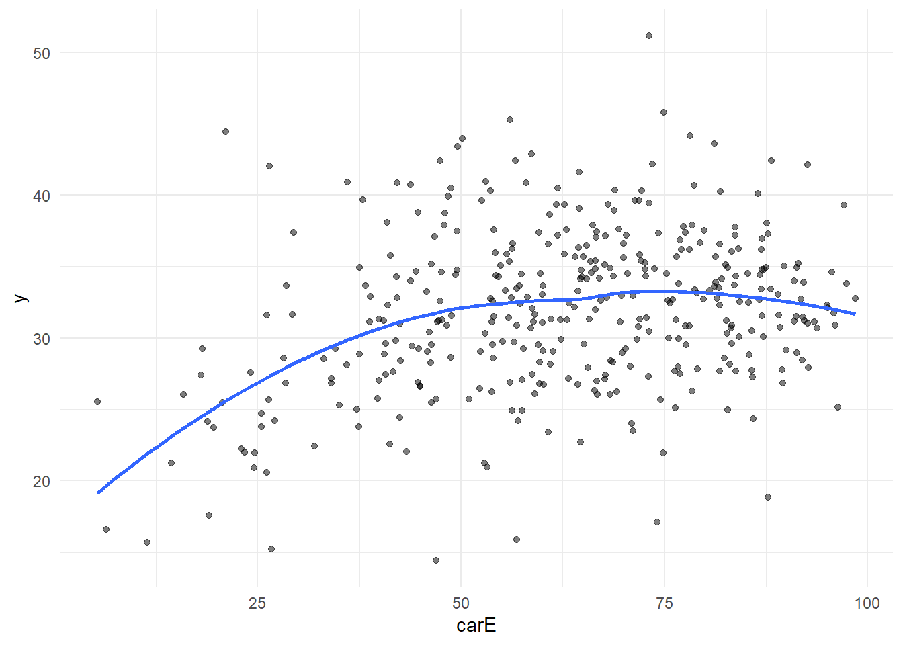
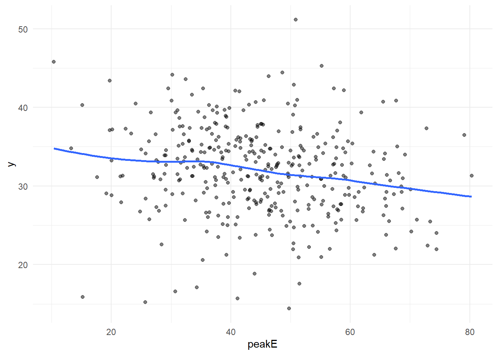
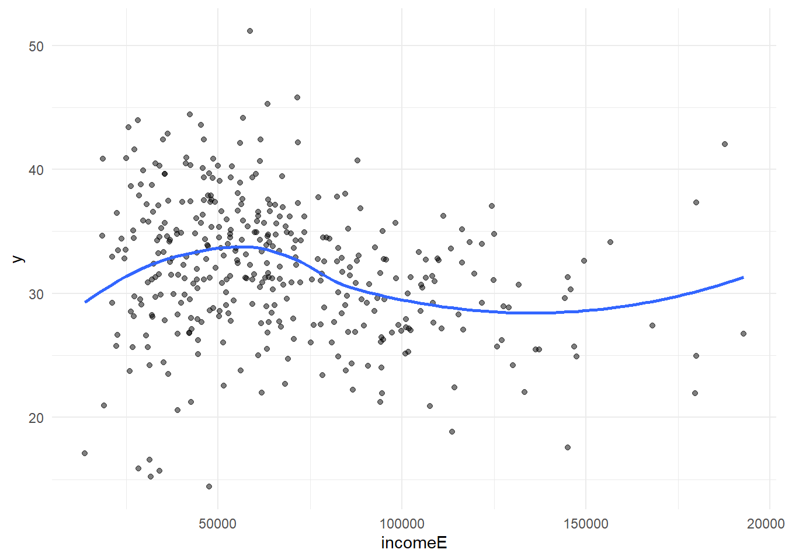
The smoothing function shows that peakE most likely has a linear relationship with y (commute time). carE and incomeE show a bit of bending.
But overall, if we were to avoid overfitting to local fluctuations, all 3 graphs show that the data points generally follow a straight line path as we move across the x-axis.
We can try fitting a multiple linear regression with these 3 predictors.
f1 <- y ~ carE + peakE + incomeE
m1 <- lm(f1, data = tracts)
summary(m1)
Call:
lm(formula = f1, data = tracts)
Residuals:
Min 1Q Median 3Q Max
-17.6057 -3.1678 -0.0844 3.1490 18.2057
Coefficients:
Estimate Std. Error t value Pr(>|t|)
(Intercept) 2.983e+01 1.481e+00 20.144 < 2e-16 ***
carE 7.642e-02 1.411e-02 5.417 1.09e-07 ***
peakE -8.971e-03 2.536e-02 -0.354 0.72376
incomeE -3.430e-05 9.565e-06 -3.586 0.00038 ***
---
Signif. codes: 0 '***' 0.001 '**' 0.01 '*' 0.05 '.' 0.1 ' ' 1
Residual standard error: 5.268 on 376 degrees of freedom
Multiple R-squared: 0.1235, Adjusted R-squared: 0.1165
F-statistic: 17.65 on 3 and 376 DF, p-value: 9.667e-11model_log <- model_log %>%
add_row(model = "m1", added = "ACS baseline",
cv_rmse = cv_rmse(f1, tracts),
notes = "Baseline model misses by 5.25min")
#model_log <- model_log[-1, ] # to remove row
model_log# A tibble: 1 × 4
model added cv_rmse notes
<chr> <chr> <dbl> <chr>
1 m1 ACS baseline 5.25 Baseline model misses by 5.25minWrite the CV RMSE as a sentence, in your outcome’s units:
On tracts it hasn’t seen, the baseline model misses by about 5 minutes.
Save this map. You’ll compare it to your final model’s map in Part 6.
tracts <- tracts %>% mutate(resid_m1 = residuals(m1))
ggplot(tracts) +
geom_sf(aes(fill = resid_m1), color = NA) +
scale_fill_gradient2(low = "#2166ac", mid = "grey95", high = "#b2182b", midpoint = 0) +
theme_void() +
labs(title = "Baseline model: where it's wrong",
subtitle = "Red = actual higher than predicted",
fill = "Residual")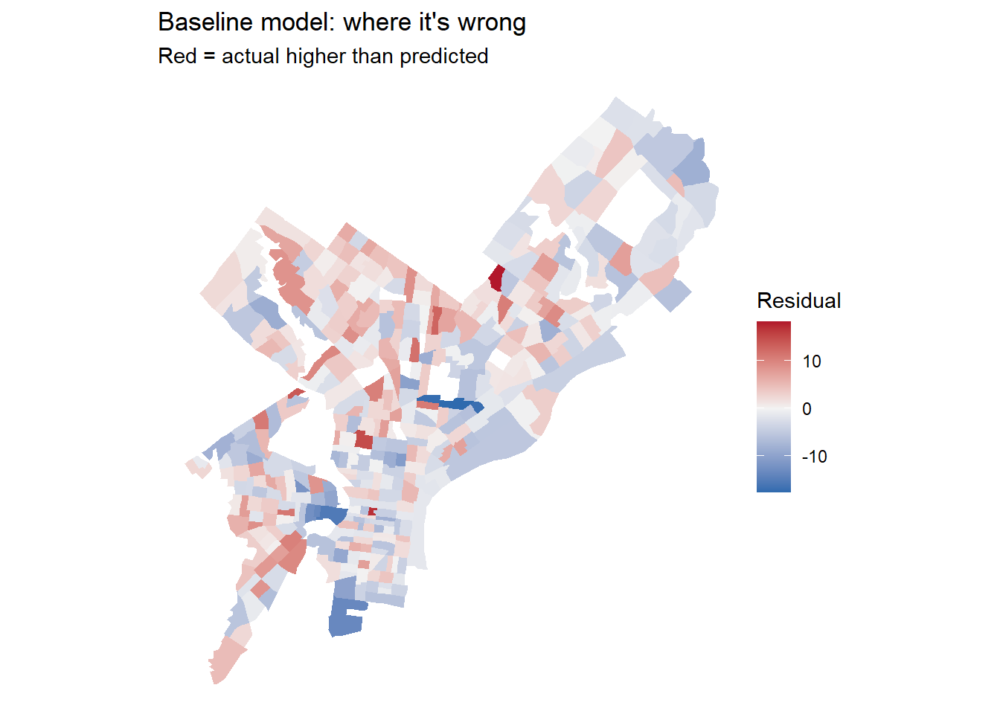
Answer: Where do the residuals cluster? What might those places have in common that your model doesn’t know about? Use this answer to choose your open data layers in Part 3.
Not much of a spatial pattern that is observable, although generally Center City has more negative residuals. The further from Central, the more positive the residuals become.
This indicates that at Center City, the actual observed travel time is less than what the model predicted. This is likely true because at Center City, residents are closer to places of employment which means their distance to work is shorter.
Many of the city’s datasets on OpenDataPhilly are served through a Carto SQL API. You send a SQL query in a URL, and it sends back data. Ask for format=GeoJSON and st_read() reads the result directly, just like the Indego feed in Week 4.
The pattern:
https://phl.carto.com/api/v2/sql?format=GeoJSON&q=SELECT ... FROM table_name WHERE ...Three pieces of SQL are all you need:
SELECT the_geom, column1, column2 chooses which columns come back. Always include the_geom, or you get no geometry.FROM table_name chooses the dataset.WHERE ... filters rows. Filter in the query, not in R. Some tables have millions of rows, and pulling everything will be slow or fail.This helper builds the URL for you. Spaces and symbols in a URL need encoding, and URLencode() handles that.
carto_get <- function(sql) {
url <- paste0("https://phl.carto.com/api/v2/sql?format=GeoJSON&q=", URLencode(sql))
st_read(url, quiet = TRUE)
}On a dataset’s OpenDataPhilly page, look for the API link. The table name is the word after FROM in the example query. To see what values a column takes before you filter on it, ask for a count in CSV format:
# What kinds of crime are in the incidents table in 2023?
url <- paste0("https://phl.carto.com/api/v2/sql?format=csv&q=",
URLencode("SELECT text_general_code, COUNT(*) AS n
FROM incidents_part1_part2
WHERE dispatch_date >= '2023-01-01' AND dispatch_date < '2024-01-01'
GROUP BY text_general_code ORDER BY n DESC"))
read_csv(url)# A tibble: 32 × 2
text_general_code n
<chr> <dbl>
1 Thefts 37054
2 Other Assaults 25986
3 Motor Vehicle Theft 22478
4 Vandalism/Criminal Mischief 17346
5 All Other Offenses 13334
6 Theft from Vehicle 13002
7 Fraud 7661
8 Aggravated Assault No Firearm 5134
9 Burglary Residential 3800
10 Aggravated Assault Firearm 3320
# ℹ 22 more rowsburglary <- carto_get(
"SELECT the_geom, text_general_code, dispatch_date
FROM incidents_part1_part2
WHERE dispatch_date >= '2023-01-01' AND dispatch_date < '2024-01-01'
AND text_general_code = 'Burglary Residential'"
) %>%
st_transform(st_crs(tracts)) # Carto returns EPSG 4326; translate immediately
nrow(burglary)[1] 3800Some records have no location. Drop them with filter(!st_is_empty(burglary)), and count how many you lost. Every point you drop is a point that won’t be counted.
burglary <- burglary %>%
filter(!st_is_empty(burglary))
nrow(burglary)[1] 3681119 records were lost because they had no location.
These tables were available on Carto as of this fall. If a query fails, check the dataset’s OpenDataPhilly page for the current table name.
| Data | Table | Filter on | Notes |
|---|---|---|---|
| Crime incidents | incidents_part1_part2 |
dispatch_date, text_general_code |
Pick specific offense types |
| Shooting victims | shootings |
date_ |
Small enough to pull several years |
| 311 requests | public_cases_fc |
requested_datetime, service_name |
Use the count query above to see service names |
| Indego stations | (not Carto) https://www.rideindego.com/stations/json/ |
— | The Week 4 feed |
Datasets like these have a link to the API, e.g. https://cityofphiladelphia.github.io/carto-api-explorer/#business_licenses
where business_licenses after the # is the table name
and where “Fields” include all the column names that can be extracted
This is a list of all the datasets but it’s not very legible.
Datasets not on Carto often have a GeoJSON download link on their OpenDataPhilly page. st_read() reads those URLs too. For example, navigage to https://opendataphilly.org/, find a dataset that you’d like to import. I found city landmarks. On the page there is a link to a GeoJSON file. I simply right-clicked on that hyperlink and copied it and then used st_read() and pasted the link:
landmarks <- st_read(“https://hub.arcgis.com/api/v3/datasets/6b2fe4a0fbe14e0a8e6afceaea230b8e_0/downloads/data?format=geojson&spatialRefId=4326&where=1%3D1”)
Pull at least two layers that you think relate to your outcome. Base your choice on your Part 2C answer:
Based on the mapped residuals above which seem to decrease in value closer to Center City, I wonder if Center City as a main hub of employment could be a contributing factor (which was not accounted for in the ACS Baseline model).
It was a bit of a struggle to find effective transport-related predictors. The only transport-related contributors that have minimal spatial spillover effect I could think of is point data of Indego stations which could represent first-mile journeys for commuters who take public transport that could shorten their travel time.
#Pull business-licenses table via Carto
business <- carto_get(
"SELECT cartodb_id, licensetype, initialissuedate, zip, the_geom
FROM business_licenses
WHERE initialissuedate >= '2022-01-01' AND initialissuedate < '2023-01-01' AND the_geom IS NOT NULL
") %>%
filter(!st_is_empty(.)) %>%
st_transform(st_crs(tracts)) # Carto returns EPSG 4326; translate immediately
plot(business, max.plot=1)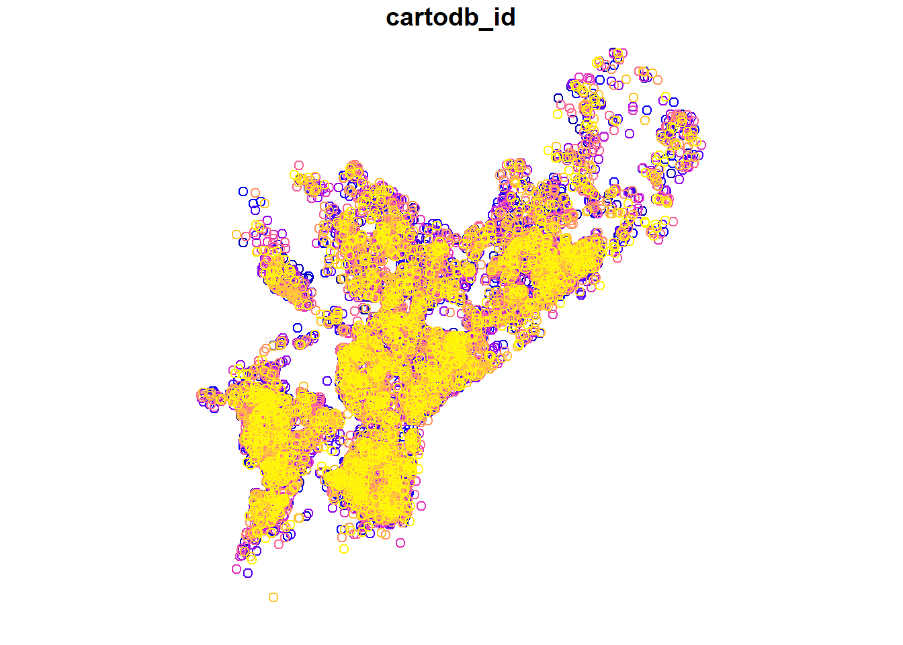
#point data of indego stations
indego <- st_read("https://www.rideindego.com/stations/json/") %>%
select(id, name, geometry) %>%
st_transform(st_crs(tracts))Reading layer `OGRGeoJSON' from data source
`https://www.rideindego.com/stations/json/' using driver `GeoJSON'
Simple feature collection with 320 features and 33 fields
Geometry type: POINT
Dimension: XY
Bounding box: xmin: -75.249 ymin: 39.88994 xmax: -75.10121 ymax: 40.03807
Geodetic CRS: WGS 84plot(indego, max.plot=1)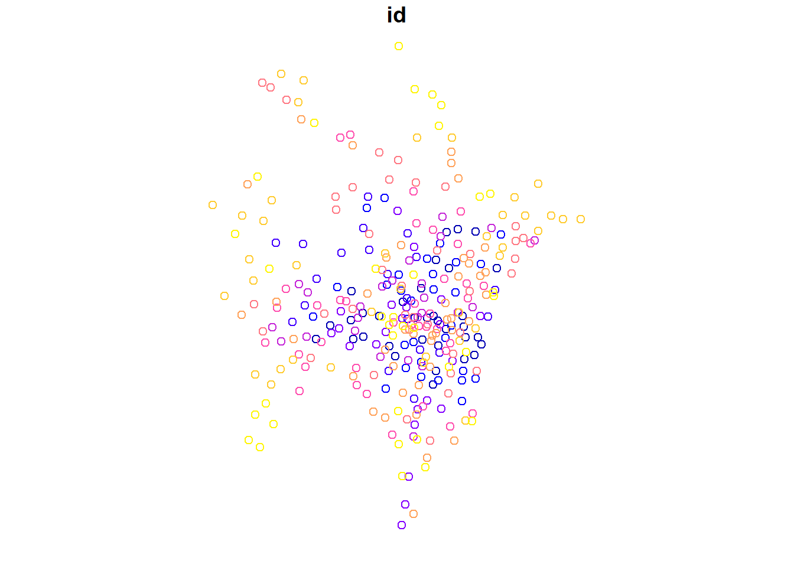
Answer: Why these layers? What do you expect them to capture that the ACS variables don’t?
Your answer:
business point dataset represents the location of businesses in Philly. This indicates the locations of employment; tracts with higher locations of employment suggest that residents have the potential to be closer to their workplace (as people tend to choose to live near work), which could reduce the average travel time.indego point dataset represents the location of indego bikeshare stations in Philly. This indicates the presence of first- and last-mile transit options for commuters taking public transport, allowing them to cut down their travel time.Every feature below reuses a Week 4 tool. The worked examples use burglaries and Indego stations; you build the same types from your own layers.
How many burglaries fall in each tract?
tracts <- tracts %>%
mutate(n_burglary = lengths(st_intersects(., burglary)))
summary(tracts$n_burglary) Min. 1st Qu. Median Mean 3rd Qu. Max.
0.000 4.000 7.000 9.458 13.000 48.000 A tract with no burglaries gets 0, not NA, so Rule 1 is safe.
Raw counts mostly measure tract size. A big tract has more of everything. Normalize by area, by population, or by housing units, depending on what makes sense for the thing you’re counting.
tracts <- tracts %>%
mutate(
area_sqmi = as.numeric(st_area(.)) / 27878400, # sq ft in a sq mile
burglary_per_sqmi = n_burglary / area_sqmi,
burglary_per_1k = n_burglary / popE * 1000
)If a tract has 40 residents and 3 burglaries, its rate is 75 per 1,000, which is a huge number built on tiny counts. Look at the tracts with the highest per-capita rates before you trust them. This is the Week 3 lesson about small denominators again.
How far is each tract from its nearest Indego station? Use the Week 4 pattern: find the nearest feature, then measure to it element by element.
(centroids is not exactly a very helpful measure of anything)
tract_pts <- st_point_on_surface(tracts) # always inside the tract, unlike a centroid
nearest_idx <- st_nearest_feature(tract_pts, indego)
tracts <- tracts %>%
mutate(dist_station_mi = as.numeric(
st_distance(tract_pts, indego[nearest_idx, ], by_element = TRUE)) / 5280)Sometimes the “thing” is a single location, such as City Hall as a stand-in for the center of the regional economy.
city_hall <- st_sfc(st_point(c(-75.1636, 39.9526)), crs = 4326) %>%
st_transform(st_crs(tracts))
tracts <- tracts %>%
mutate(dist_ch_mi = as.numeric(st_distance(tract_pts, city_hall)) / 5280)Build at least three spatial features from your own layers, and use at least two types (count, density, nearest distance, distance to a place). After each one, fit a model, cross-validate it, and log it.
I will compute
business_density_bypop: Business density (number of businesses per population)dist_station_mi: Distance to nearest Indego station from tract centroid (miles)dist_ch_mi: Distance from City Hall (miles)
tracts <- tracts %>%
mutate(n_businesses = lengths(st_intersects(.,business))) %>%
#normalise to population --> get business_density
mutate(business_density_bypop = n_businesses/workingpopE)
#i also already have dist_station_mi and dist_ch_mi
#indego has already been done!
# cannot do indego density because it does not account for cross-tract interactions
f2 <- y ~ carE + peakE + incomeE +
business_density_bypop + dist_station_mi + dist_ch_mi
m2 <- lm(f2, data = tracts)
summary(m2)
Call:
lm(formula = f2, data = tracts)
Residuals:
Min 1Q Median 3Q Max
-18.455 -2.992 -0.057 3.004 18.363
Coefficients:
Estimate Std. Error t value Pr(>|t|)
(Intercept) 2.702e+01 1.692e+00 15.962 < 2e-16 ***
carE 4.465e-03 2.131e-02 0.209 0.8342
peakE -3.310e-03 2.478e-02 -0.134 0.8938
incomeE -1.423e-05 1.042e-05 -1.366 0.1727
business_density_bypop 3.934e+01 1.818e+01 2.163 0.0311 *
dist_station_mi -1.150e+00 2.572e-01 -4.471 1.03e-05 ***
dist_ch_mi 1.348e+00 2.401e-01 5.612 3.90e-08 ***
---
Signif. codes: 0 '***' 0.001 '**' 0.01 '*' 0.05 '.' 0.1 ' ' 1
Residual standard error: 5.073 on 373 degrees of freedom
Multiple R-squared: 0.1937, Adjusted R-squared: 0.1807
F-statistic: 14.93 on 6 and 373 DF, p-value: 2.55e-15model_log <- model_log %>%
add_row(model = "m2", added = "spatial features: business_density_bypop + dist_station_mi + dist_ch_mi",
cv_rmse = cv_rmse(f2, tracts),
notes = "Improved RMSE by 0.2min")
# remove second row if needed
#model_log <- model_log[-2, ]
# repeat for each feature
model_log# A tibble: 2 × 4
model added cv_rmse notes
<chr> <chr> <dbl> <chr>
1 m1 ACS baseline 5.25 Base…
2 m2 spatial features: business_density_bypop + dist_station_m… 5.06 Impr…Answer: Which spatial feature helped most? Did any feature you expected to help do nothing, or make CV RMSE worse? Why might that be?
Your answer:
The CV RMSE improved by 0.19 minutes, indicating that the model is only slightly better at predicting unseen data.
However the t-test for car, income, and peak produces a p-value larger than 0.05, indicating a non-statistically significant linear relationship between these predictors and travel time to work. This means that even though while its individual effect on travel time are not statistically significant, it might still be providing useful information for out-of-sample prediction that helps with cross-validation.
Before the new spatial features were added, carE and incomeE passed the t-test but not any more. This could mean that adding the spatial features made carE and incomeE redundant.
Watch the October 9 recorded lecture before you start this part. Below is a summary to work from.
So far, every predictor has entered the model as a straight line: each additional unit of X changes predicted Y by the same amount, everywhere. Transformations let the model bend. For prediction, the question is simply does the bend lower CV RMSE? For interpretation, each transformation changes what a coefficient means, so you need to know how to read it.
Keep your outcome y untransformed in this assignment. If you model log(y), your CV RMSE comes out in log units and can’t be compared to the other rows in your log. (Predicting a logged outcome well requires back-transforming, which is an A4 topic.)
Many urban variables are skewed: a few tracts have huge values, and most have small ones. Income, density, and counts are typical. A log compresses the long tail, so a model can use the difference between 1 and 10 as well as the difference between 100 and 1,000.
ggplot(tracts, aes(x = burglary_per_sqmi)) + geom_histogram(bins = 30) + theme_minimal()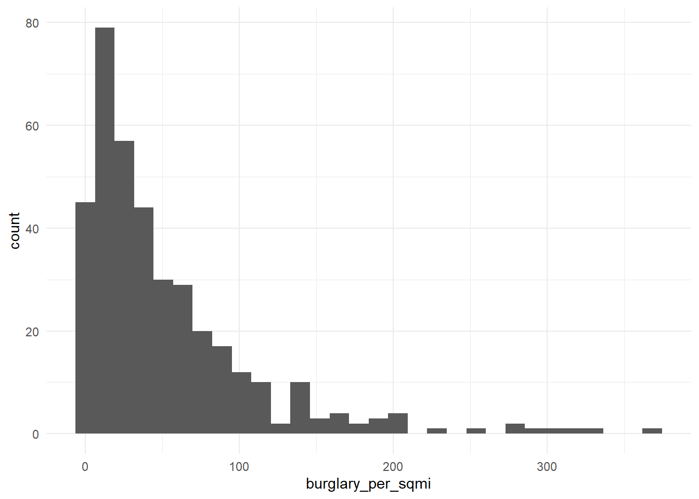
ggplot(tracts, aes(x = log1p(burglary_per_sqmi))) + geom_histogram(bins = 30) + theme_minimal()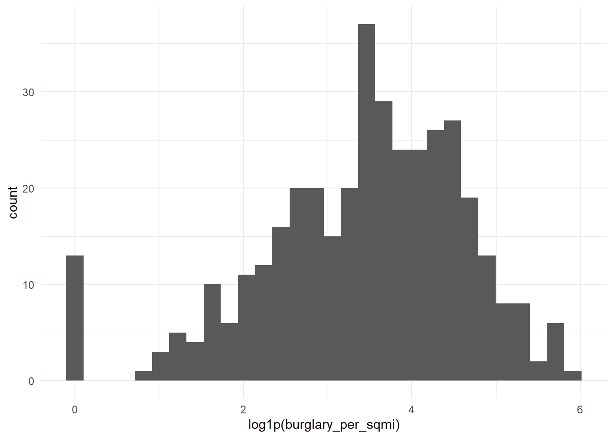
log(0) is -Inf, and it will break your model. Counts and densities often include zeros. Use log1p(x), which computes log(x + 1), for anything that can be 0.
Reading the coefficient: when a predictor is logged, a 1% increase in X goes with a change of about β/100 in Y, in Y’s units. With log1p, this reading is approximate for small values of X.
If your scatterplot bends (rising and then flattening, or falling and then rising), a squared term lets the line curve. Write it with I(), which tells R to do the arithmetic rather than read ^ as formula syntax.
m_sq <- lm(y ~ dist_ch_mi + I(dist_ch_mi^2), data = tracts)
summary(m_sq)
Call:
lm(formula = y ~ dist_ch_mi + I(dist_ch_mi^2), data = tracts)
Residuals:
Min 1Q Median 3Q Max
-18.5194 -3.0884 -0.0491 2.9256 16.3693
Coefficients:
Estimate Std. Error t value Pr(>|t|)
(Intercept) 25.87577 0.69995 36.968 < 2e-16 ***
dist_ch_mi 2.10433 0.25419 8.279 2.19e-15 ***
I(dist_ch_mi^2) -0.12422 0.01908 -6.511 2.39e-10 ***
---
Signif. codes: 0 '***' 0.001 '**' 0.01 '*' 0.05 '.' 0.1 ' ' 1
Residual standard error: 5.054 on 377 degrees of freedom
Multiple R-squared: 0.1911, Adjusted R-squared: 0.1868
F-statistic: 44.54 on 2 and 377 DF, p-value: < 2.2e-16Reading the coefficient: you can’t read either coefficient alone anymore. The effect of X depends on where you are along X. A positive linear term with a negative squared term means Y rises with X and then levels off or turns down. Plot the fitted curve to see it:
ggplot(tracts, aes(x = dist_ch_mi, y = y)) +
geom_point(alpha = 0.4) +
geom_smooth(method = "lm", formula = y ~ x + I(x^2), se = FALSE, color = "red") +
theme_minimal()
Sometimes a number works better as groups, either because the relationship isn’t smooth or because the categories are meaningful. You can make categories from any variable with case_when() or cut(), and then make sure R treats them as a factor.
tracts <- tracts %>%
mutate(
ring = case_when(
dist_ch_mi < 2 ~ "Core",
dist_ch_mi < 5 ~ "Inner",
TRUE ~ "Outer"
),
ring = factor(ring, levels = c("Core", "Inner", "Outer"))
)
tracts %>% st_drop_geometry() %>% count(ring) ring n
1 Core 79
2 Inner 134
3 Outer 167m_cat <- lm(y ~ ring, data = tracts)
summary(m_cat)
Call:
lm(formula = y ~ ring, data = tracts)
Residuals:
Min 1Q Median 3Q Max
-17.5146 -3.2886 -0.1537 3.1284 17.1430
Coefficients:
Estimate Std. Error t value Pr(>|t|)
(Intercept) 27.5537 0.5699 48.349 < 2e-16 ***
ringInner 4.3575 0.7185 6.065 3.21e-09 ***
ringOuter 6.4529 0.6917 9.329 < 2e-16 ***
---
Signif. codes: 0 '***' 0.001 '**' 0.01 '*' 0.05 '.' 0.1 ' ' 1
Residual standard error: 5.065 on 377 degrees of freedom
Multiple R-squared: 0.1876, Adjusted R-squared: 0.1833
F-statistic: 43.52 on 2 and 377 DF, p-value: < 2.2e-16Reading the coefficients: R turns a factor with k categories into k − 1 dummy variables. The category left out is the reference level (here, “Core,” the first level). Each coefficient is the difference from the reference: ringOuter is how much higher or lower predicted Y is in outer tracts compared to core tracts, holding everything else in the model constant. To change the reference, use relevel(ring, ref = "Outer").
If a category has only a handful of tracts, its coefficient is unstable, and in cross-validation some folds may not contain it at all. Aim for at least 20 tracts per category.
Try at least one of each: a log, a squared term, and a categorical variable. Choose which variables to transform based on your plots, not at random. Log each model.
To decide which variable to transform, I will first plot all the histograms and scatterplots of my predictors:
library(tidyverse)
predictors <- c("carE", "peakE", "incomeE",
"business_density_bypop", "dist_station_mi", "dist_ch_mi")
# Faceted Histograms
tracts %>%
st_drop_geometry() %>%
select(all_of(predictors)) %>%
pivot_longer(cols = everything(), names_to = "predictor", values_to = "value") %>%
ggplot(aes(x = value)) +
geom_histogram(bins = 30, fill = "steelblue", color = "white", alpha = 0.8) +
facet_wrap(~ predictor, scales = "free") +
theme_minimal()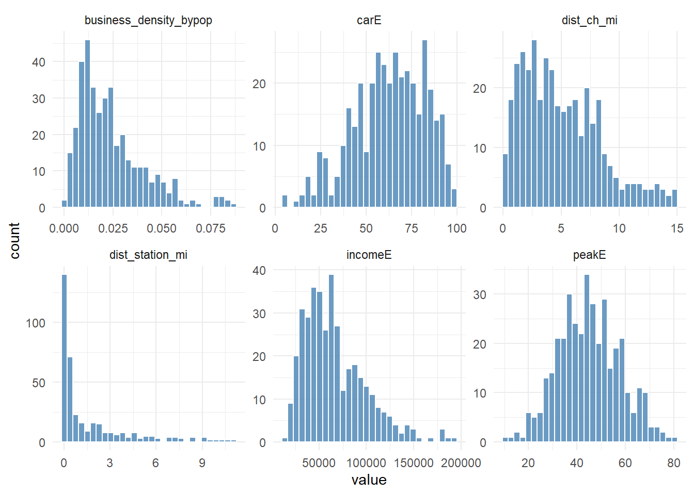
tracts %>%
st_drop_geometry() %>%
select(all_of(predictors), y) %>%
pivot_longer(cols = all_of(predictors), names_to = "predictor", values_to = "value") %>%
ggplot(aes(x = value, y = y)) +
geom_point(alpha = 0.5, color = "darkblue") +
geom_smooth(method = "lm", formula = y ~ x + I(x^2), color = "red", se = FALSE) + # Optional linear trend line
facet_wrap(~ predictor, scales = "free_x") +
theme_minimal() +
labs(
x = "Predictor Value",
y = "Commute time"
)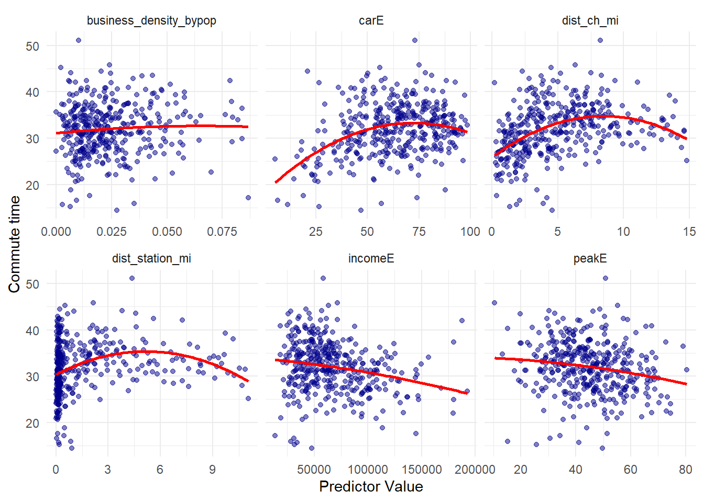
| Transformation type | Variable chosen and why |
|---|---|
| log |
The histograms show strong right skew for |
| squared term |
The scatterplots show the most bending for |
| categorical variable |
The scatterplots shows the most likely a jumping relationship (different slopes at different values of x) instead of a smooth slope (although not really) so we will try it on |
How did the log transformation affect the business_density_by_pop histogram?
hist(log(tracts$business_density_bypop ))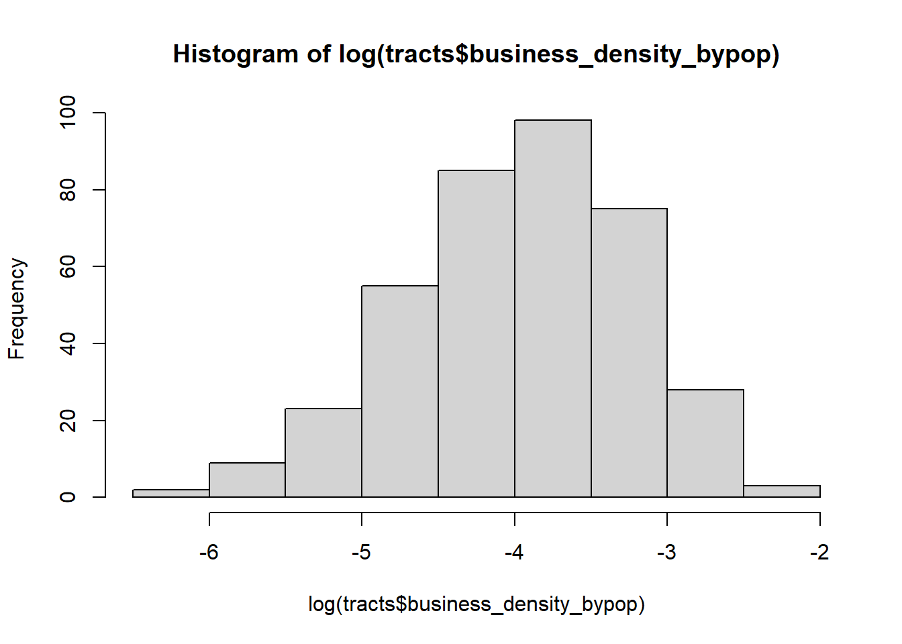
It helped to normalize business_density_bypop!
A) Log: log1p() is used instead of log() avoid issues when x is zero (since we did not filter this out for business_density_bypop)
# LOGARITHMIC
#| label: my-transformsiter
f_log <- y ~ carE + peakE + incomeE +
log1p(business_density_bypop) + dist_station_mi + dist_ch_mi
model_log <- model_log %>%
add_row(model = "m3", added = "log: business_density_bypop",
cv_rmse = cv_rmse(f_log, tracts),
notes = "Improved m2 RMSE by 0.002min")
#model_log
#model_log <- model_log[-3, ]B) Squared term: The squared term for dist_ch_mi has a turning point within the data range so it can be plotted:
# SQUARED TERM
# squared term
f_square <- y ~ carE + peakE + incomeE +
business_density_bypop + dist_station_mi + dist_ch_mi + I(dist_ch_mi^2)
# check squared term
m_sq <- lm(f_square, data = tracts)
coef(m_sq)[c("dist_ch_mi", "I(dist_ch_mi^2)")] dist_ch_mi I(dist_ch_mi^2)
2.1119550 -0.1069069 b1 <- coef(m_sq)["dist_ch_mi"]
b2 <- coef(m_sq)["I(dist_ch_mi^2)"]
-b1 / (2 * b2) # the turning pointdist_ch_mi
9.87754 range(tracts$dist_ch_mi) # is it inside the data?[1] 0.1729283 14.7878227# yes it is within the data range so i can add it to the model
model_log <- model_log %>%
add_row(model = "m4", added = "squared term: dist_ch_mi",
cv_rmse = cv_rmse(f_square, tracts),
notes = "Improved m2 RMSE by 0.05min")
#model_log
#model_log <- model_log[-4, ]C) Categorical data: There are enough observations for my 3 categories of car commuters so it can be plotted.
# categorical
#check range
range(tracts$carE)[1] 5.298651 98.433792# separate based on visually inspected pattern in scatterplot
# first section: 5-33
# second section: 33-70
# third section: 70 - 98 --> 31 observations, which is enough for a 10fold cv
tracts <- tracts %>%
mutate(
ringCar = case_when(
carE < 33 ~ "Low",
carE < 70 ~ "Mid",
TRUE ~ "High"
),
ringCar = factor(ringCar, levels = c("Low", "Mid", "High")) # "Low" is baseline
)
# check number of observations per ring
tracts %>% st_drop_geometry() %>% count(ringCar) ringCar n
1 Low 31
2 Mid 201
3 High 148# model matrix just to see what columns are generated
#model.matrix(~ ringCar, data = st_drop_geometry(tracts)) %>% head(8)
f_cat <- y ~ peakE + incomeE + business_density_bypop +
dist_station_mi + dist_ch_mi + ringCar
m_cat <- lm(f_cat, data = tracts)
#coef(m_cat)[c("ringCarMid", "ringCarHigh")]summary(m_cat)
Call:
lm(formula = f_cat, data = tracts)
Residuals:
Min 1Q Median 3Q Max
-18.9670 -3.1080 -0.0566 2.7369 18.9451
Coefficients:
Estimate Std. Error t value Pr(>|t|)
(Intercept) 2.514e+01 1.648e+00 15.252 < 2e-16 ***
peakE -1.057e-03 2.434e-02 -0.043 0.965385
incomeE -1.459e-05 1.016e-05 -1.437 0.151539
business_density_bypop 2.270e+01 1.837e+01 1.236 0.217401
dist_station_mi -9.705e-01 2.568e-01 -3.779 0.000183 ***
dist_ch_mi 1.274e+00 2.240e-01 5.689 2.6e-08 ***
ringCarMid 3.379e+00 1.064e+00 3.174 0.001629 **
ringCarHigh 1.912e+00 1.270e+00 1.506 0.132976
---
Signif. codes: 0 '***' 0.001 '**' 0.01 '*' 0.05 '.' 0.1 ' ' 1
Residual standard error: 4.99 on 372 degrees of freedom
Multiple R-squared: 0.2221, Adjusted R-squared: 0.2075
F-statistic: 15.17 on 7 and 372 DF, p-value: < 2.2e-16model_log <- model_log %>%
add_row(model = "m5", added = "categorical variable: added ringCar instead of carE",
cv_rmse = cv_rmse(f_cat, tracts),
notes = "Improved m2 RMSE by 0.04min")
#model_log
#model_log <- model_log[-(5), ]model_log# A tibble: 5 × 4
model added cv_rmse notes
<chr> <chr> <dbl> <chr>
1 m1 ACS baseline 5.25 Base…
2 m2 spatial features: business_density_bypop + dist_station_m… 5.06 Impr…
3 m3 log: business_density_bypop 5.05 Impr…
4 m4 squared term: dist_ch_mi 5.00 Impr…
5 m5 categorical variable: added ringCar instead of carE 5.01 Impr…Answer: Which transformation helped most? For your categorical variable, write one sentence reading one of its coefficients correctly, naming the reference level.
Your answer:
Best transformation: All 3 transformations did not improve the RMSE the most. The squared term for dist_ch_mi helped the most (0.05min). This could make sense in explaining the commuting time: Generally, a higher distance from City Hall increases the commuting time; but at a very large distance from City Hall, people might choose a different workplace in the peripheries that is much easier to get to.
For the categorical variable: the coefficient for ringCarMid is 3.37. This means that on average, areas (our ringCarMid category) with a medium amount of car commuters (33-70%) will have a commute time that is 3.37 minutes longer than areas with a low amount of car commuters (<33%) (our reference category ringCarLow), holding other predictors constant. The positive coefficient is interesting because it suggests that car commuters have a longer commute than non-car commuters (e.g. public transport and walking). This is quite unintuitive because you would expect the car commuters to be able to travel faster and hence get to work faster. However, it is likely that the non-car commuters live much closer to their workplace, allowing them to take alternative forms of transport to work.
Combine the features and transformations that earned their place, judged by CV RMSE, not p-values.
Since all 3 transformed variables helped, we will add all 3 predictors into m2 to build the final model
Final model:
f_final <- y ~ peakE + incomeE +
business_density_bypop + dist_station_mi + dist_ch_mi + I(dist_ch_mi^2) + ringCar
m_final <- lm(f_final, data = tracts)
summary(m_final)
Call:
lm(formula = f_final, data = tracts)
Residuals:
Min 1Q Median 3Q Max
-19.5745 -3.1656 -0.1164 2.6358 18.9211
Coefficients:
Estimate Std. Error t value Pr(>|t|)
(Intercept) 2.314e+01 1.766e+00 13.105 < 2e-16 ***
peakE 1.108e-02 2.444e-02 0.453 0.65046
incomeE -7.787e-06 1.031e-05 -0.755 0.45058
business_density_bypop 2.385e+01 1.819e+01 1.311 0.19052
dist_station_mi 7.039e-02 4.340e-01 0.162 0.87124
dist_ch_mi 2.037e+00 3.399e-01 5.993 4.89e-09 ***
I(dist_ch_mi^2) -1.098e-01 3.711e-02 -2.960 0.00328 **
ringCarMid 2.897e+00 1.066e+00 2.717 0.00689 **
ringCarHigh 8.748e-01 1.304e+00 0.671 0.50289
---
Signif. codes: 0 '***' 0.001 '**' 0.01 '*' 0.05 '.' 0.1 ' ' 1
Residual standard error: 4.938 on 371 degrees of freedom
Multiple R-squared: 0.2401, Adjusted R-squared: 0.2237
F-statistic: 14.65 on 8 and 371 DF, p-value: < 2.2e-16Final CV RMSE:
model_log <- model_log %>%
add_row(model = "final", added = "log + squared term + categorical",
cv_rmse = cv_rmse(f_final, tracts),
notes = "Final model misses by 4.95min. This is a 0.3min improvement from baseline")
library(DT)
datatable(model_log, options = list(scrollX = TRUE))#model_log <- model_log[-6, ]tracts <- tracts %>% mutate(resid_final = residuals(m_final))
ggplot(tracts) +
geom_sf(aes(fill = resid_final), color = NA) +
scale_fill_gradient2(low = "#2166ac", mid = "grey95", high = "#b2182b", midpoint = 0) +
theme_void() +
labs(title = "Final model: where it's wrong",
subtitle = "Red = actual higher than predicted",
fill = "Residual")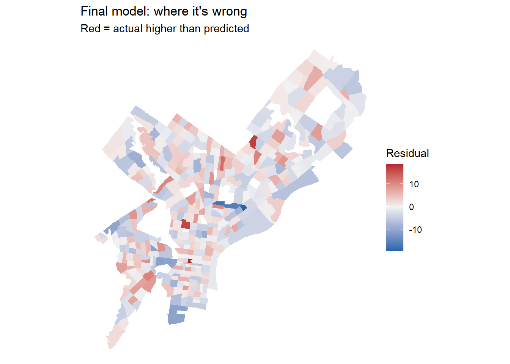
Put your two residual maps side by side, or put them next to each other in the rendered document. Did the clusters from Part 2C shrink? Where did they stay?
Let me plot them side by side on the same scale so it can be compared:
# need to pivot to long format to facet_wrap
tracts %>%
pivot_longer(
cols = c(resid_m1, resid_final),
names_to = "model",
values_to = "residual"
) %>%
mutate(
model = factor(
model,
levels = c("resid_m1", "resid_final"),
labels = c("Baseline Model (m1)", "Final Model (final)")
)
) %>%
ggplot() +
geom_sf(aes(fill = residual), color = NA) +
scale_fill_gradient2(
low = "#2166ac",
mid = "grey95",
high = "#b2182b",
midpoint = 0
) +
facet_wrap(~model) +
theme_void() +
theme(
strip.text = element_text(size = 11, face = "bold"),
legend.position = "bottom",
plot.title = element_text(face = "bold", size = 14)
) +
labs(
title = "Model Residual Comparison",
subtitle = "Red = observed higher than predicted | Blue = observed lower than predicted",
fill = "Residual"
)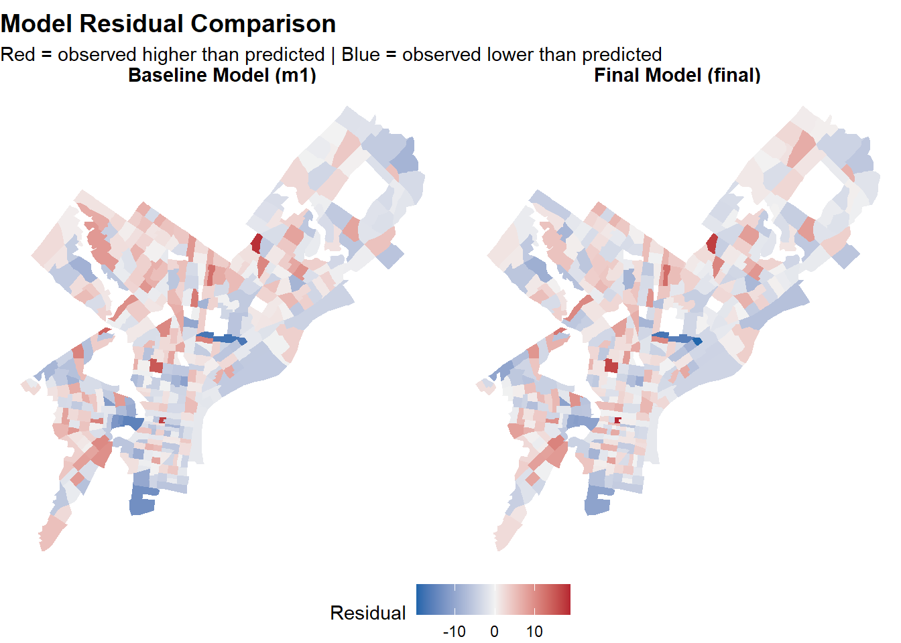
library(tidyverse)
tracts %>%
pivot_longer(
cols = c(resid_m1, resid_final),
names_to = "model",
values_to = "residual"
) %>%
mutate(
model = factor(
model,
levels = c("resid_m1", "resid_final"),
labels = c("Baseline (m1)", "Final (final)")
)
) %>%
ggplot(aes(x = residual, color = model, fill = model)) +
geom_density(alpha = 0.2, linewidth = 1) +
geom_vline(xintercept = 0, linetype = "dashed", color = "grey50") +
scale_color_manual(values = c("Baseline (m1)" = "#2b8cbe", "Final (final)" = "#e41a1c")) +
scale_fill_manual(values = c("Baseline (m1)" = "#2b8cbe", "Final (final)" = "#e41a1c")) +
theme_minimal() +
labs(
title = "Residual Distribution Comparison",
x = "Residual Value",
y = "Density",
color = "Model",
fill = "Model"
)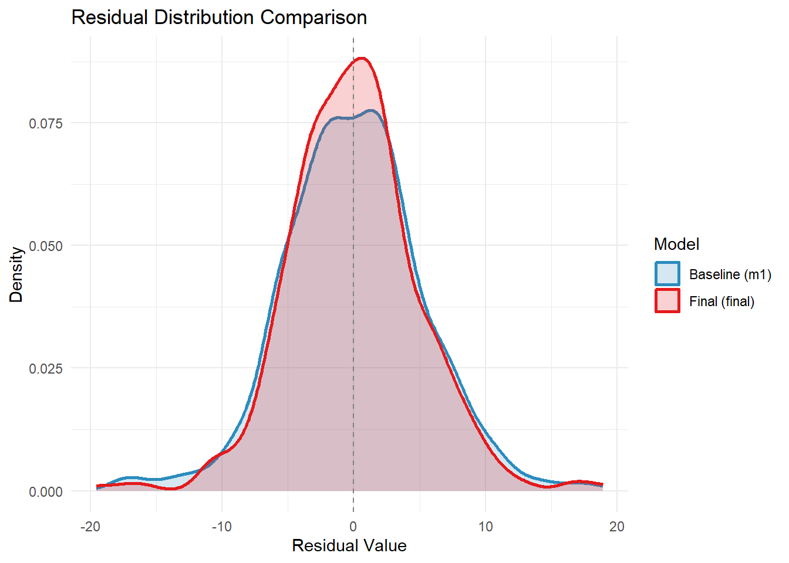
Visual inspection of the two choropleth maps side by side does not yield any drastically different results, suggesting the final model did not make much improvement to predicting unseen data. However, plotting the histograms do show that the final model have more residuals clustered around zero; it’s just that the clusters are (visually) not very different.
ggplot(tracts, aes(x = y_cv, y = abs(resid_final))) +
geom_point(alpha = 0.5) +
geom_smooth(se = FALSE) +
labs(x = "CV of your outcome estimate (%)", y = "Size of the miss") +
theme_minimal()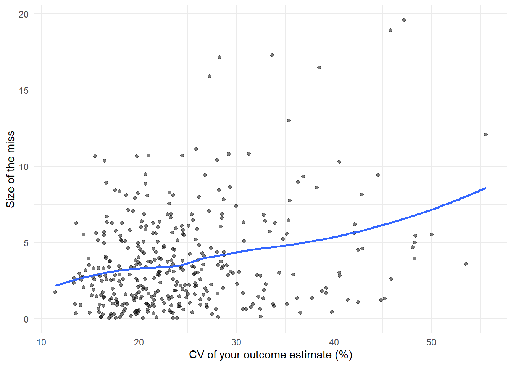
So there is a slight upwards slope where increase in CV is associated with an increase in residual values.
We notice some tracts with high CVs also having a very big miss in the model. Indeed the biggest misses are in the least reliable tract. This could suggest that the model’s failure in those “big miss” tracts are due to data unreliability.
Answer in prose, drawing on your model log (incorporate our words of the day for bonus points. just kidding):
(see “Archive” for supporting R code)
| Question | Answer |
|---|---|
|
The introduction of spatial features in m3 was definitely the most helpful. I extracted the individual effects of
I was most disappointed by |
|
β̂ reading: Holding all other predictors constant, an increase in median household income (per year) by $10,000 is associated with a 0.07787 minute (approx. 4.7 seconds) decrease in commute time. ŷ reading: For a census tract with a median household income of $80,000, and average values across all other predictors, the model predicts an average commute time of 34 minutes. |
|
Honestly I am not too sure :(((( The dark blue (negative) long residual in the middle of the map is Pennypack Trail, and one of the red residuals is Burholme Park. This probably means it contains very few housing units which means a very small sample size. This results in a high coefficient of variation meaning that the model might be predicting values accurately, but the actual values measured are innaccurate. |
|
We do see some sort of correlation where tracts with high CVs also having a very big miss in the model. Indeed the biggest misses are in the least reliable tract. This could suggest that the model’s failure in those “big miss” tracts are due to data unreliability. But what is considered high CV and large miss?
The scatterplot of “miss” against CV above shows there are only 4 observations fulfilling those 2 conditions. Therefore there is not a lot of error that attributed to uncertainty. |
Render this document to HTML and submit the link on Canvas by Friday, October 16. I’ll miss you all terribly while I’m away. Please send letters or correspondences to my office mailbox.
Question 1
library(tidyverse)
# Initialize empty tibble
spatial_rmse <- tibble(
model = character(),
added = character(),
cv_rmse = numeric()
)
# Baseline formula with non-spatial features
f_base <- y ~ peakE + incomeE
spatial_rmse <- tibble(
model = character(),
added = character(),
cv_rmse = numeric()
) %>%
add_row(model = "baseline", added = "peakE + incomeE", cv_rmse = cv_rmse(f_base, tracts)) %>%
add_row(model = "spatial_1", added = "+ business_density_bypop", cv_rmse = cv_rmse(y ~ peakE + incomeE + business_density_bypop, tracts)) %>%
add_row(model = "spatial_2", added = "+ dist_station_mi", cv_rmse = cv_rmse(y ~ peakE + incomeE + business_density_bypop + dist_station_mi, tracts)) %>%
add_row(model = "spatial_3", added = "+ dist_ch_mi", cv_rmse = cv_rmse(y ~ peakE + incomeE + business_density_bypop + dist_station_mi + dist_ch_mi, tracts))
spatial_rmse# A tibble: 4 × 3
model added cv_rmse
<chr> <chr> <dbl>
1 baseline peakE + incomeE 5.45
2 spatial_1 + business_density_bypop 5.46
3 spatial_2 + dist_station_mi 5.38
4 spatial_3 + dist_ch_mi 5.04Question 2
# extract most common factor level for ringCar
get_mode <- function(x) {
ux <- unique(na.omit(x))
ux[which.max(tabulate(match(x, ux)))]
}
# 1. Create a 1-row data frame with incomeE = 80000
sample_tract <- tracts %>%
summarize(
incomeE = 80000,
peakE = mean(peakE, na.rm = TRUE),
business_density_bypop = mean(business_density_bypop, na.rm = TRUE),
dist_station_mi = mean(dist_station_mi, na.rm = TRUE),
dist_ch_mi = mean(dist_ch_mi, na.rm = TRUE),
ringCar = get_mode(ringCar) # uses most frequent factor level
)
# 2. Predict y-hat
predict(m_final, newdata = sample_tract) 1
34.08569 Question 3
# adding basemap to residuals
library(maptiles)
library(tidyterra)
bg_tiles <- get_tiles(tracts, provider = "Esri.WorldGrayCanvas", crop = TRUE)
ggplot() +
geom_spatraster_rgb(data = bg_tiles) +
geom_sf(data = tracts, aes(fill = resid_final), color = NA, alpha = 0.65) +
scale_fill_gradient2(
low = "#2166ac",
mid = "grey95",
high = "#b2182b",
midpoint = 0
) +
theme_void() +
labs(
title = "Final model: where it's wrong",
subtitle = "Red = obsereved higher than predicted",
fill = "Residual"
)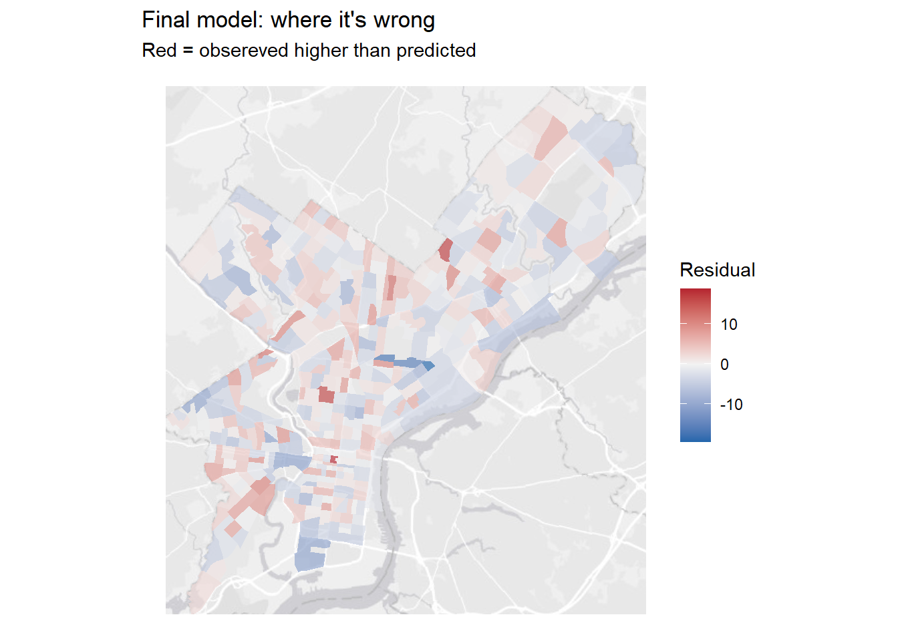